HUNDERTWASSER'S THIRD
DEATH ANNIVERSARY COMMEMORATION
The Austrian painter and architect Friedensreich Hundertwasser (Friedrich Stowasser) died at age 71 on February 19th, 2000 on board of the ship Queen Elizabeth 2. He was buried in the "Garden of the Happy Dead" from New Zealand, the country where he decided to settle 20 years earlier. The Austrian PA has issued on the 2nd of July 2000a miniature sheet showing the "Blue Blues" work, commemorating the death of the artist.
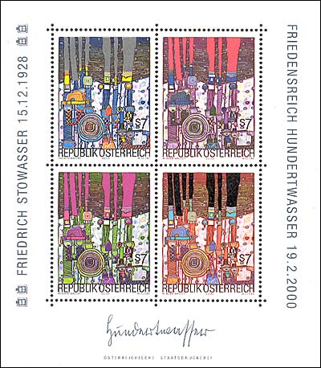
Hundertwasser lived in the north of New Zealand in a small town called Kawakawa, found in the Bay of Islands.
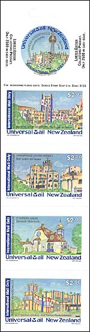 |
For this reasons it is not
surprisingly that a NZ post dedicated stamps to Hundertwasser's works. But
what is surprisingly is the fact that it wasn't the New Zealand post, but
a private post named Universal Mail New Zealand, a large freight and
courier company which has over 500 collection (post boxes) locations
scattered around New Zealand, that issued stamps dedicated to
Hundertwasser. Actually, on 29 December, 2002 Universal Mail New Zealand issued two self-adhesive booklet panes featuring five different famous Hundertwasser buildings. These stamps are fully valid for International Mail from New Zealand to any overseas destination. |
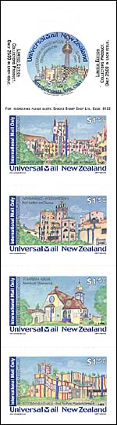 |
|
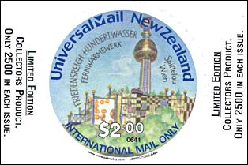 |
The first pane contains 5 different $1.50 values (for the postcards and aerogrammes postal rate) while the second pane contains the same 5 designs but in $2 values (for the envelope postal rate).
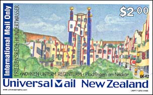 |
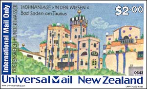 |
The round stamp shows a "Fernwärmewerk" (Heat Factory), foreseen for Spittelau, Vienna. The "Wohnen unterm Regenturm" (Living under the Rain Tower) was a project for the place Plochingen am Neckar. The "Wohnanlage 'in den Wiesen'" (Housing Area in the Grassland) was for Bad Soden am Taunus.
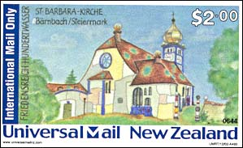 |
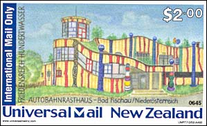 |
"St. Barbara Kirche" (the Church of St. Barbara) was foreseen for Bärnbach/Steiermark, and the "Autobahnrasthaus" (Freeway Roadhouse) for Bad Fischau/Niederösterreich.
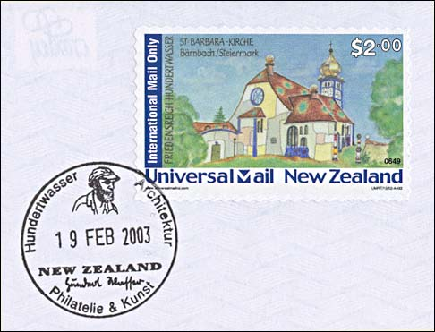
I'm not a big fan of Hundertwasser's works, but what makes this issue more special to me is the discussion that took place on the newsgroup rec.collecting.stamps.discuss, in January 2003, about the validity of these stamps. I wanted to know if these stamps can be really used for the mail traffic, so I have asked for help Dave Joll, an extremely friendly NZ stamp collector. It is thanks to him that I have got not only the booklet panes (only 2500 pairs issued), but also five cancelled postcards and five cancelled letters. I have chosen the day of the 19th February 2003, the day of the third death anniversary of the artist, as the day when the stamps should be cancelled. This makes them a bit more special, in a certain way even unique.
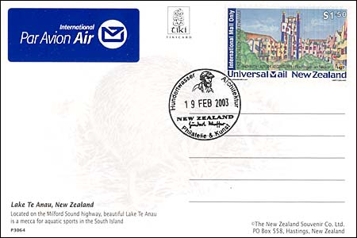
In order to get them in good condition, all postcards and letter were sent in a common cover (on which the sender has used, unfortunately, a different Universal Mail stamp).
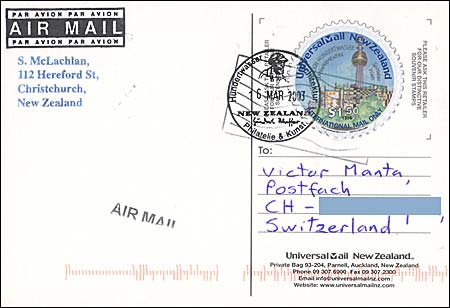
The above post card, that I have got later, demonstrates that the Hundertwasser's issue, like any other UM's one, can be used for prepaying the transportation and dispatching costs. My conclusion is that these are valid stamps, and that they belong to any Hundertwasser collection that pretends to be complete.
At my present knowledge, this is the first philatelic site that is according more attention to the UM stamps, by showing and by describing them as good as possible. Maybe it will convince other Hundertwasser stamp collectors and philatelic webmasters alike to take a second look at them.
Links:
-
Hundertwasser stamps page, on this site
-
An extensive Hundertwasser stamps site
-
An Art History site
-
Still another page
-
Universal Mail of NZ
Background: People (Complement to "Trees"), 1950.